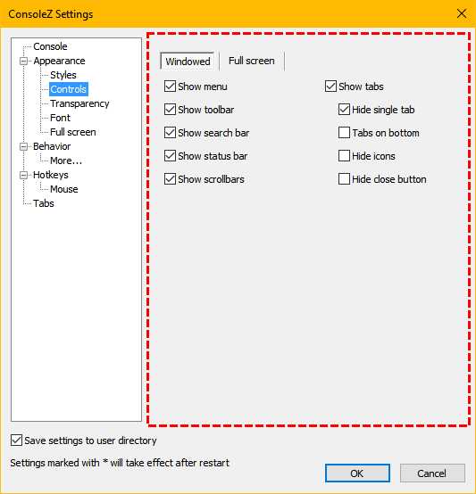

Windowed/Fullscreen
If Windowed is selected, you are editing control settings available in windowed mode.
If Full screen is selected, you are editing control settings available in full screen mode.
Show menu
Shows/hides main menu.
Show toolbar
Shows/hides toolbar.
Show search bar
Shows/hides search bar.
Show status bar
Shows/hides status bar.
Show scrollbars
If checked, scrollbars will be shown if the underlying console shows them. If not checked, scrollbars will be always hidden.
Show tabs
Shows/hides tabs bar.
Hide single tab
If checked, tabs bar will be hidden if there's only one tab active.
Tabs on bottom
If checked, tabs bar will appear at the bottom of the main window.
Hide icons
If checked, icons are hidden in the tabs bar.
Hide close button
If checked, close button is hidden in the tabs bar.